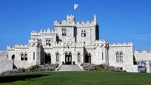
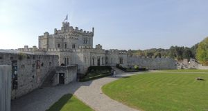
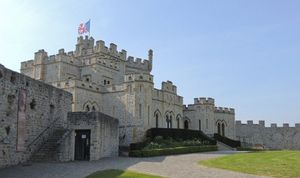
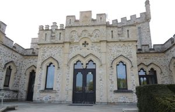
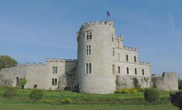
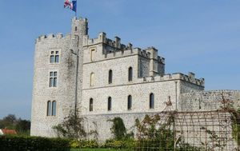
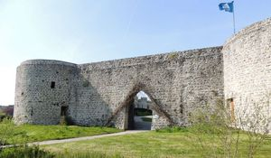
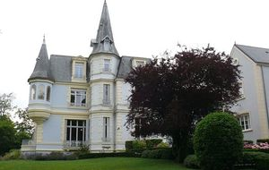

Recensement Jean-Claude Truffet
| Département | 62 — Pas-de-Calais |
| Canton | Outreau |
| Commune | Condette_Dannes |
| Type d'édifice | forteresse |
| Période d'origine | XVIII |
| Coordonnées GPS | 50° 38' 44" Nord, 1° 36' 41" Est le Tourelles grav-8 |








HARDELOT, au XIIIe siècle, le comte de Boulogne Philippe Hurepel a fait édifier un puissant château-fort de pierre. Son père, le Roi de France Philippe-Auguste, souhaitait en effet conforter ses territoires à lOuest et au Nord et se prémunir des velléités du Roi dAngleterre (Richard Cur de Lion, puis Jean-sans-Terre) et à limiter la puissance de la Flandre. Cest dans ce contexte quont été construits les châteaux de Montreuil-sur-Mer et dHardelot. La construction est achevée dans un climat politique tendu, Hurepel sétant ouvertement opposé à la mère de son jeune neveu Louis IX, la reine-régente Blanche de Castille. Le château-fort était alors une enceinte fortifiée de forme polygonale, composée de 10 imposantes tours reliées par de hautes courtines. Un châtelet dentrée muni dun pont-levis, dune herse et dun assommoir en commandait laccès. Chose tout à fait singulière, signe de lopulence des comtes de Boulogne. Outre sa fonction défensive, le château était également une demeure de plaisance où les comtes de Boulogne résidaient, allaient à la chasse et festoyaient. En 1544, lors du siège de Boulogne par Henri VIII dAngleterre, ses ambassadeurs et ceux du Roi de France François 1er se sont rencontrés et ont négocié au château dHardelot. Dans une lettre adressée à son épouse Catherine ,la seule qui lui survivra, Henri VIII qualifiait Hardelot de maison forte. En 1615, la régente catholique Marie de Médicis, mère du jeune Louis XIII, a envoyé son favori, lambitieux et très contesté Maréchal dAncre, Concino Concini, assiéger . Le château était devenu un fief de protestants belliqueux et appartenait alors au marquis de Bonnivet, qui a déplu à la reine de telle sorte quil est accusé de lèse-majesté. Il semble que le siège ait été particulièrement rude, laissant le château en bien triste état.
HARDELOT, Mais Bonnivet est parvenu à senfuir à Londres, laissant sur place femme et enfant. La Régente a ordonné alors le démantèlement du château en signe de soumission totale à son autorité. En 1848 sir John Harenouveau propriétaire fait construire le manoir néogothique En 1899, à la mort dHenry Guy, le château a été vendu à John-Robinson Whitley. Celui-ci, industriel mais également co-fondateur du Touquet-Paris-Plage, souhaitait créer une nouvelle station balnéaire afin dy accueillir la gentry britannique et française. Il a créé en 1905 la société nonyme dHardelot, le golf est inauguré en 1906 par le duc dArgyll, beau-frère du Roi dAngleterre Edward VII. Elle a pris le nom du château : Hardelot-Plage est née. Le château d'Hardelot est appelé le Centre Culturel de l'Entente Cordiale. C'est un manoir de style néo-gothique, construit par un anglais, au XIXe siècle, sur les ruines d'un ancien château fort datant du XIIIe siècle. Le château dHardelot a retrouvé son atmosphère victorienne en 2014, propriété de la commune depuis 1987. La Maison Diocésaine appelée les TOURELLES est bâtie à Condette, Les Tourelles : maison d'accueil diocésaine qui organise des sessions religieuses, des formations, des préparations au mariage et anime des groupes de réflexion. Ces 3 monuments sont à découvrir à Condette et sont inscrits aux M.H. : Le château d'Hardelot, Les Tourelles et le Manoir du Grand Moulin (inscrit le 12/08/1998).
comte de Boulogne Philippe Hurepel "
Hardelot grav 1 à 7 GPS : 50° 38' 44" Nord, 1° 36' 41" Est le Tourelles grav-8